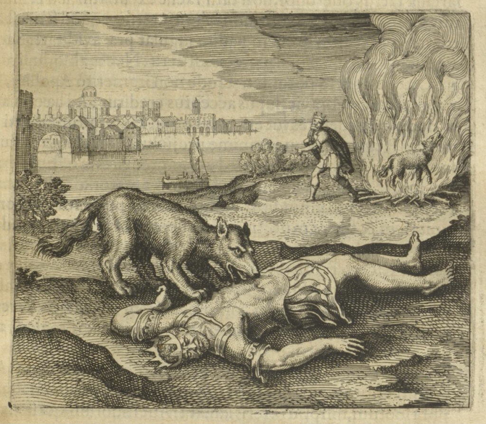
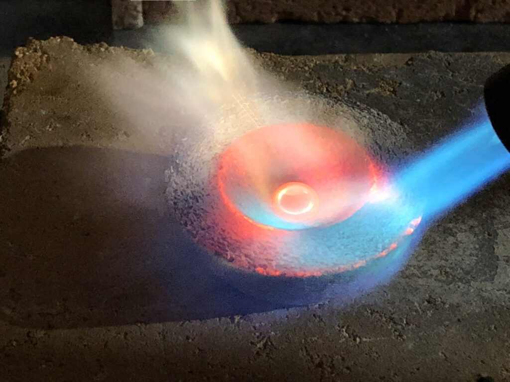

Matthäus Merian d.Ä., Emblem XXIV. Regem lupus voravit & vitae crematus reddidit für Michael Maier, Atalanta fugiens, Oppenheim: Johann Theodor de Bry 1618, S. 105, UB Frankfurt, Sign. 8° P 5.75
Verblasen des Antimons im Experiment zur alchemistischen Goldreinigung, Basel 2021 © Foto: Christoph Jäggy
Den König hat der Wolff gefressen, und als er verbrennet wurde, bekam er das Leben wieder.1 Was der Arzt-Alchemist Michael Maier im Epigramm des 24. Emblems der Atalanta fugiens so kryptisch umschreibt und Matthäus Merian d.Ä. nicht weniger rätselhaft in einer Simultannarration ins Bildliche überträgt, erschließt sich dem alchemistisch-eingeweihten Betrachter augenblicklich als häufig angewandter Prozess.
Die Alchemisten kleideten Rezepturen und Abläufe vielfach in verrätselte Erzählungen, die der Ikonografie der Alchemie ihre besondere Eigenart verliehen. Beispielsweise glaubte man, in mythologischen Geschichten einen reichen Fundus an verschleierten alchemistischen Prozessen vorzufinden. Mit der sogenannten ‚Mythoalchemie‘ entwickelte sich ein ganz neues literarisches Genre, das regelrecht danach verlangte, illustriert zu werden. Die Alchemisten verwendeten also Decknamen für Substanzen, die sie dann in Gestalt von Tieren, sagenhaften Zwitter- und Fabelwesen, Königinnen und Königen miteinander ‚reagieren‘ ließen, um ihr geheimes Wissen vor unerwünschten Blicken zu schützen.2 Ein Beispiel für diese sprachbildliche Vorliebe ist ein Prozess, der gefährlich und gewinnbringend zugleich war: die Reinigung des Goldes mittels Antimon.
Da Gold in den seltensten Fällen ohne Verunreinigung durch andere Metalle, meist Silber, vorliegt, sein Wert aber mit seinem Reinheitsgrad steigt, suchte man nach Methoden, um das Edelmetall in Reinform zu extrahieren. Scheideverfahren kannte die Metallurgie mehrere, doch keines war so vielversprechend wie der sogenannte ‚trockene Weg‘ im Feuer, bei dem Gold mit dem Halbmetall Antimon3 geschmolzen wurde. Das Antimon war ein begehrter Stoff, den man seit der Antike überwiegend zu medizinischen Zwecken verwendete. Ab dem frühen 16. Jahrhundert kam es auch bei der Goldscheidung zum Einsatz. Wie den menschlichen Körper sollte es auch den des Edelmetalls reinigen, denn es hat die Eigenschaft, unedlere Metalle in sich aufzunehmen und dabei das Gold weitgehend unbeschadet zu lassen.4
Und damit sind die beiden Bildprotagonisten aus Merians Pictura bestimmt: Der schwarze Wolf ist das Antimon, das das Gold, den König, verschlingen muss, damit dieser zu neuem Leben erwachen kann. Auf die historische, aus zeitgenössischen Rezeptsammlungen abgeleitete Laborpraxis bezogen bedeutet das, dass das zu reinigende Gold mit der dreifachen Menge Antimon in einem Tiegel geschmolzen werden muss. Nachdem die flüssigen Metalle in einen konischen Gießpuckel gegossen wurden, zerfällt der erkaltete Regulus in zwei Teile: Unten setzt sich das geläuterte Gold legiert mit reduziertem Antimonmetall ab, oben die schwarze Antimonschlacke zusammen mit Silber und den unedlen Metallen. Diesen Vorgang gilt es mehrfach zu wiederholen. Bei jedem Durchgang erhöht sich der Reinheitsgrad des Goldes.5
Um das gereinigte Gold aus dem Gold-Antimon-Regulus zu befreien, muss dieser in den Flammen des Feuers ‚verblasen‘ werden – ein nicht ungefährliches Unterfangen, denn die Antimondämpfe sind nicht unbedenklich. Eben diesen Prozess verbildlicht Merians Illustration: Der in Flammen aufgehende Wolf ist nichts anderes als das verblasene Antimon, das den geläuterten König in Form einer glänzenden Perle in völliger Reinheit zurücklässt (Abb.).

Michael Maiers Quelle für Text und Bild in der Atalanta fugiens war der Erste Schlüssel von Basilius Valentinus‘ Practica cum Duodecim Clavibus:
so nim den geitzigen grawen Wolff […] / so in den Thälern und Bergen der Welt gefunden wird / und mit grossem Hunger besessen / und wirff ihm für den Leib des Königes / daß er daran seine zehrung haben mög / und wenn er den König verschlungen / so mache ein groß fewer / und wirff den Wolff darein / daß er gantz und gar verbrenne / so wird der König wieder erlöset werden […]6
In der Illustration wird die so beschriebene Reinigung des Goldes allerdings zu einem Nebenschauplatz: Ein kleiner Wolf scheint über einen in einer Feuerstelle stehenden Schmelztiegel hinweg aus dem Bildfeld zu springen. Die eigentlichen Bildprotagonisten sind ein Königspaar, das, so verrät der Text, miteinander vermählt werden soll.7 Auch hier wird keine Liebesgeschichte erzählt. Bei den Brautleuten handelt es sich um die beiden abstrakten, gegensätzlichen Prinzipien der Alchemie, die in der sogenannten Chymischen Hochzeit miteinander vereinigt werden sollen. Damit dies aber geschehen kann, gilt es die Ingredienzen zunächst zu reinigen: Die Krone des Königs sol von reinem Golde seyn […].8 Das hier Geschilderte ist demnach sowohl abstrakt als auch sehr konkret und praktisch zu verstehen.
Letztendlich bleibt nach dem holzbeinigen, laborierenden Planetengott Saturn zu fragen, der an den rechten Bildrand gedrängt ist. Verbirgt sich dahinter eine Allegorie oder eine Handlungsanweisung? Zum einen erfährt der Leser, dass der gefräßige Wolf ein Kind des alten Saturni sei, d.h., dass das Halbmetall Antimon Verwandtschaft mit Blei aufweist. Zum anderen wird hier in der Darstellung auf ein weiteres, in der Alchemie und im Probierwesen häufig angewandtes Verfahren verwiesen: die sogenannte Kupellation. Das Silber, das das Antimon vom Gold abgeschieden hat, ist kein Abfallprodukt. Um es aus der Antimonschlacke zu befreien, wird diese zusammen mit Blei auf einer aus Knochenasche gefertigten Kupelle verbrannt. Das geschmolzene Bleioxid löst die unedlen Metalle und wird von der Knochenasche aufgesaugt. Übrig bleibt eine Perle aus reinem Silber, über die Saturn hier seine Sense schwingt.
Dieses Beispiel zeigt anschaulich, welcher Verschlüsselungsstrategien sich die Alchemie bediente. Während ein nicht eingeweihter Betrachter schlichtweg eine tödliche Wolfsattacke oder eine romantische Königshochzeit sehen würde, offenbaren sich dem Alchemiekundigen in Text und Bild bestimmte Laborverfahren. Eine erfahrene Leserschaft setzen die Autoren bei all dem aber voraus. So anschaulich die Illustrationen mit dem nötigen Hintergrundwissen erscheinen mögen, so sehr schweigen sie zu den Mengenverhältnissen, der Dauer und sonstigen für die erfolgreiche Goldreinigung notwendigen Rahmenbedingungen. Dem heutigen ‚Alchemisten‘ bleibt nichts anderes übrig, als dem guten alten Prinzip des ‚trial and error‘ zu folgen.
Der hier erläuterte Vorgang ist ein grundlegender Arbeitsschritt in der Metallurgie und der Alchemie. So ist er auch Teil der Herstellung einer Legierung aus den sieben Planetenmetallen, die Paracelsus als Electrum bezeichnet und aus der die sogenannte Alchemistische Tischglocke Kaiser Rudolfs II. hergestellt wurde. Wie bei der von Basilius Valentinus beschriebenen Vorbereitung zum Opus magnum müssen die einzelnen Metalle zunächst ‚geläutert‘ werden, bevor sie miteinander legiert werden können. Für die Reinigung des Goldes empfiehlt der Autor, es dreimal durch Antimon9 zu gießen.
Corinna Gannon und Christoph Jäggy (2022)
C. Gannon und Chr. Jäggy haben ein vom Stiftungsfonds Anthroposophische Medizin gefördertes, experimental-archäologisches Forschungsprojekt durchgeführt, mit dem Ziel, das paracelsische Electrum basierend auf verschiedenen Rezepturen zu reproduzieren. Im Zuge dessen wurde auch die Goldreinigung mittels Antimon nachvollzogen. Siehe: Gannon, Corinna/Jäggy, Christoph, Goldener König und schwarzer Wolf. Alchemistische Bildsprache und Laborpraxis, in: Wagner/Gannon 2024, S. 281-286.
Literatur
Primärliteratur
Huser, Johannes (Hg.), Husersche Quartausgabe. Dieser Theil (welcher der Dritte unter den Philosophischen Schrifften) begreifft fürnemlich das treffliche Werck Theophrasti, Philosophia Sagax, oder Astronomia Magna genannt: Sampt ettlichen andern Opusculis, und einem Appendice. Band 10, Basel 1590; Thölde, Johann (Hg.), Ein kurtzer summarischer Tractat Fratris Basilii Valentini Benedectiner Ordens. Von dem grossen Stein der uhralten/ daran so viel tausent Meister anfangs der Welt hero gemacht haben/ nebenst seiner selbst eigenen klaren repetition und kurtzen widerholung/ uber dasselbige geschriebene Büchlein: darinnen das rechte Liecht der Weisen nach Philosophischer art für augen gestelt/ Benebenst einem bericht/ von den fürnembsten Mineralien und ihren eigenschafften, Leipzig 1602
Sekundärliteratur
Soukup, Rudolf Werner/Mayer, Helmut, Alchemistisches Gold, paracelsistische Pharmaka. Laboratoriumstechnik im 16. Jahrhundert. Chemiegeschichtliche und archäometrische Untersuchungen am Inventar des Laboratoriums von Oberstockstall, Kirchberg am Wagram/Wien 1997; Principe, Lawrence M., Decknamen, in: Priesner/Figala 1998, S. 104-106; Jong 2002; Hofmeier 2007; Soukup, Rudolf Werner, Chemie in Österreich. Bergbau, Alchemie und frühe Chemie, Wien/Köln/Weimar 2007; Wunderlich, Christian-Heinrich/Lockhoff, Nicole/Pernicka, Ernst, De Cementatione oder: Von der Kunst, das Gold nach Art der Alten zu reinigen, in: Metalle der Macht. Frühes Gold und Silber, hg. von Harald Meller, Roberto Risch und Ernst Pernicka, Halle 2014, S. 353-366; Forshaw 2020>; Gannon, Corinna/Jäggy, Christoph, Goldener König und schwarzer Wolf. Alchemistische Bildsprache und Laborpraxis, in: Wagner/Gannon 2024, S. 281-286.
- Zit. nach Hofmeier 2007, S. 171. Zu diesem Emblem außerdem Jong 2002, S. 186-190.[↩]
- Principe, Lawrence M., Decknamen, in: Priesner/Figala 1998, S. 104-106; Forshaw 2020 (https://doi.org/10.26300/bdp.ff.forshaw).[↩]
- In der Regel wurde Antimonsulfid (Sb2S3) verwendet. Dieses wird auch als Grauspießglanz oder Spießglas bezeichnet.[↩]
- Soukup, Rudolf Werner/Mayer, Helmut, Alchemistisches Gold, paracelsistische Pharmaka. Laboratoriumstechnik im 16. Jahrhundert. Chemiegeschichtliche und archäometrische Untersuchungen am Inventar des Laboratoriums von Oberstockstall, Kirchberg am Wagram/Wien 1997, S. 106. Zur modernen Reproduktion: Wunderlich, Christian-Heinrich/Lockhoff, Nicole/Pernicka, Ernst, De Cementatione oder: Von der Kunst, das Gold nach Art der Alten zu reinigen, in: Metalle der Macht. Frühes Gold und Silber, hg. von Harald Meller, Roberto Risch und Ernst Pernicka, Halle 2014, S. 353-366.[↩]
- Siehe hierzu beispielsweise: Johannsen, Otto (Hg.), Biringuccios Pirotechnia. Ein Lehrbuch der chemisch-metallurgischen Technologie und des Artilleriewesens aus dem 16. Jahrhundert, Braunschweig 1925, S. 238-241; Agricola, Georg, De Re Metallica Libri XII. Zwölf Bücher vom Berg- und Hüttenwesen, Wiesbaden 2007, S. 391f.; Beierlein, Paul Reinhard (Hg.), Lazarus Ercker. Beschreibung der allervornehmsten mineralischen Erze und Bergwerksarten vom Jahre 1580, Berlin 1955, S. 188-191.[↩]
- Die deutsche Übersetzung zit. nach: Thölde, Johann (Hg.), Ein kurtzer summarischer Tractat Fratris Basilii Valentini Benedectiner Ordens. Von dem grossen Stein der uhralten/ daran so viel tausent Meister anfangs der Welt hero gemacht haben/ nebenst seiner selbst eigenen klaren repetition und kurtzen widerholung/ uber dasselbige geschriebene Büchlein : darinnen das rechte Liecht der Weisen nach Philosophischer art für augen gestelt/ Benebenst einem bericht/ von den fürnembsten Mineralien und ihren eigenschafften, Leipzig 1602, S. 31. Als Quelle identifiziert bei: Jong 2002, S. 188.[↩]
- Zu einer historischen Deutung des Königspaars als Friedrich V. von der Pfalz und Elisabeth Stuart: Soukup, Rudolf Werner: Chemie in Österreich. Bergbau, Alchemie und frühe Chemie, Wien/Köln/Weimar 2007, S. 392f.[↩]
- Thölde 1602, S. 30f.[↩]
- Huser, Johannes (Hg.), Husersche Quartausgabe. Dieser Theil (welcher der Dritte unter den Philosophischen Schrifften) begreifft fürnemlich das treffliche Werck Theophrasti, Philosophia Sagax, oder Astronomia Magna genannt: Sampt ettlichen andern Opusculis, und einem Appendice. Band 10, Basel 1590, S. 118.[↩]